Everything else, right up top
The current app's menus, sound and brightness, your calendar, notifications, and search all start from one bar at the top. Clicking it never pulls focus from the app you're typing in.
Menu bar
The current app's menus, up top
Apps with menus show them as they are. For apps without one, like browsers, File Explorer, or Notion, you get a menu of their common shortcuts. Click an item and the shortcut goes straight to the app, which helps when keys don't get through, like over remote desktop.


Sound and brightness in one click
Control Center puts screen brightness, night light, and power mode at hand. The sound menu switches output and input devices and volume, and the Bluetooth menu connects your earbuds with a click.

Click the clock for your calendar
The calendar shows Korean public holidays and lunar dates. Paste an iCal address from Google Calendar or Outlook.com to see your events there too.

Notifications
Quiet banners at the top right
Windows notifications appear as banners at the top right, and long ones expand with a click. Missed something? Click the clock to see notifications grouped by app.
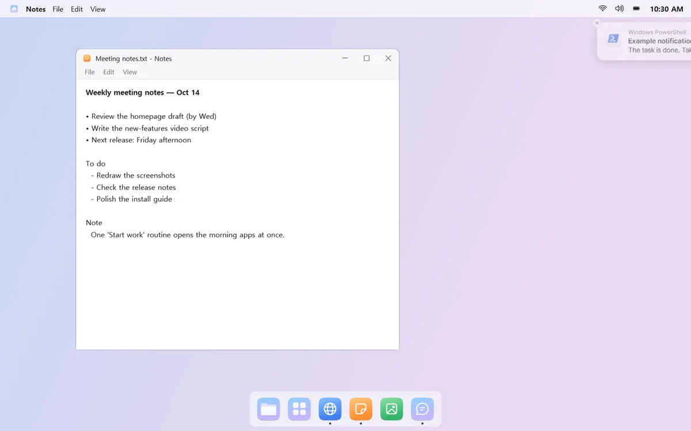
Two bounces, then a dot
When a notification arrives, that app's Dock icon bounces twice and leaves a red dot. It doesn't keep bouncing, and you can turn it off app by app.
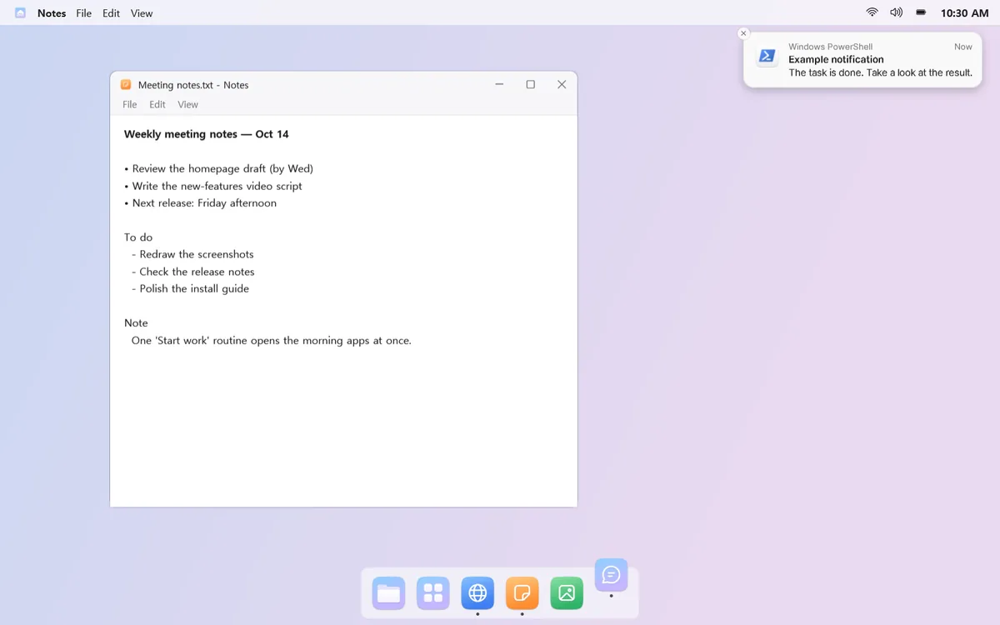
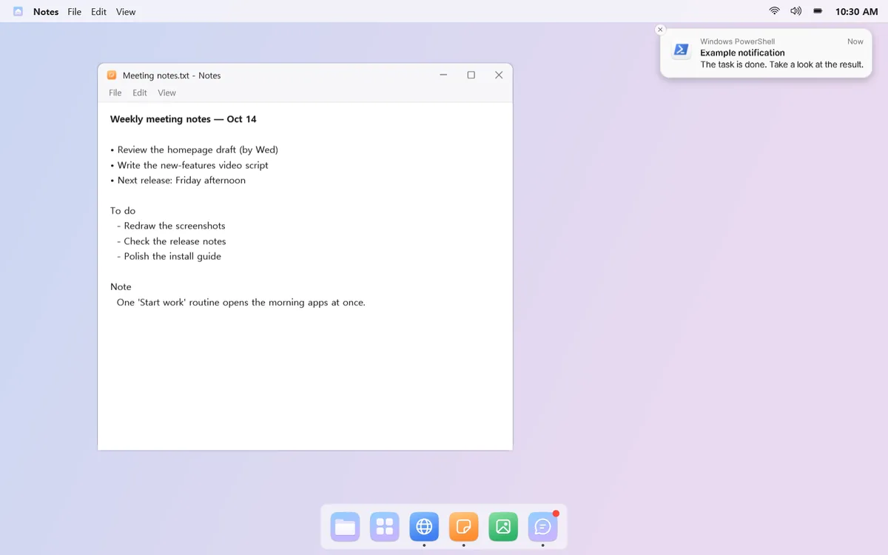
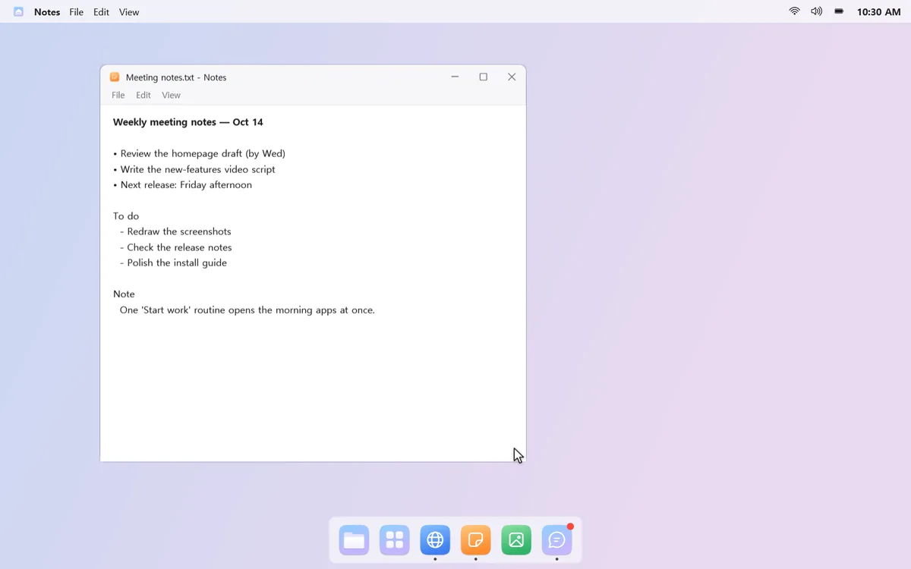
mongdock Search
Find it in a few keystrokes
Press a shortcut and a search box opens in the middle of the screen. Find apps, Windows settings, and files or folders in a few keystrokes, like “ca” for Calculator.
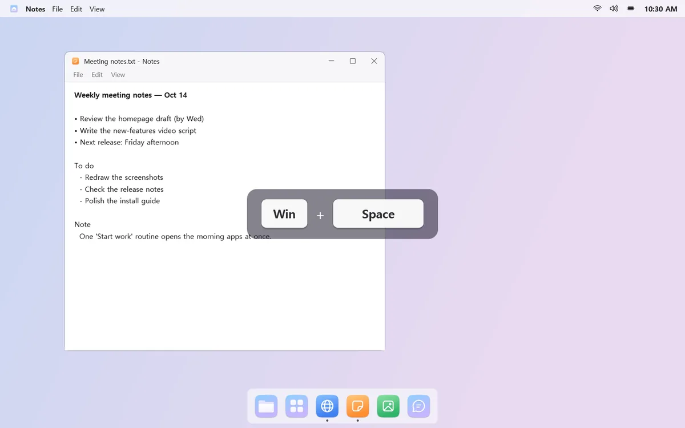

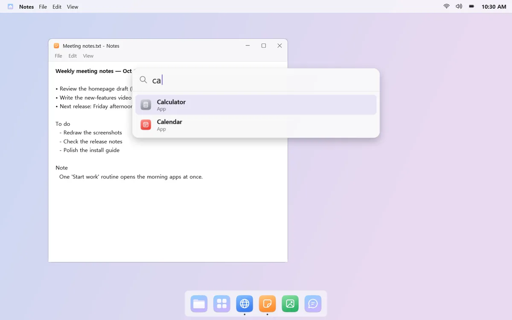
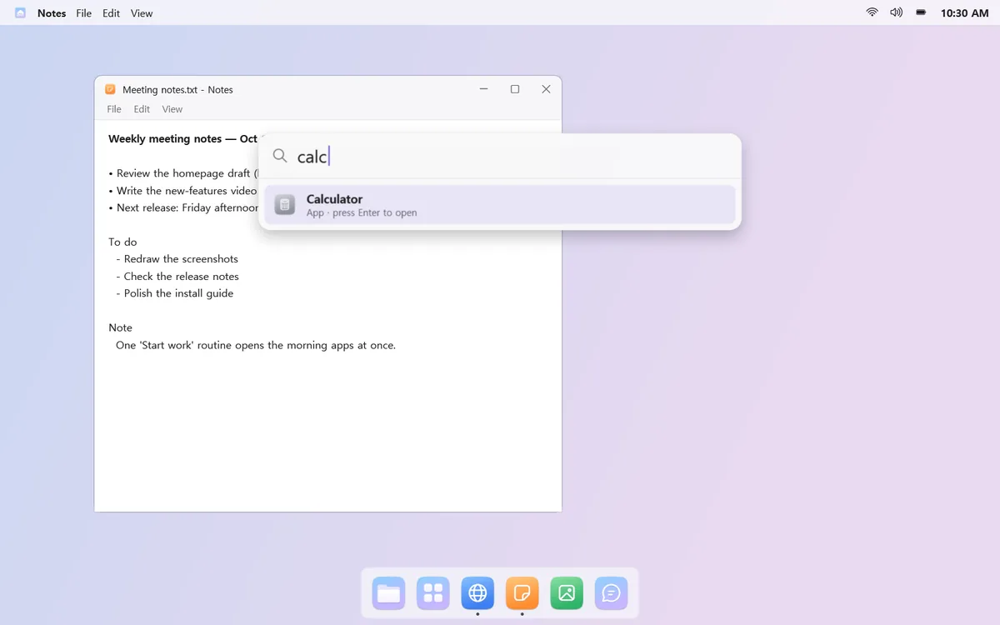
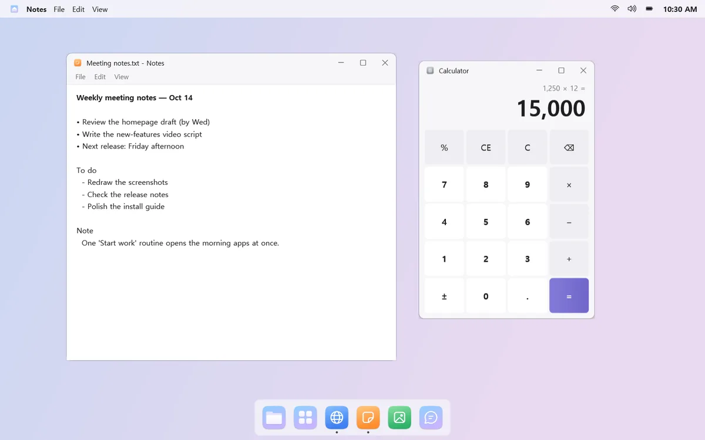
Quick math and web search, too
Type something like “200*15%” and the answer appears at the top; press Enter to copy it. Can't find it? Send the same search to Windows Search or the web.
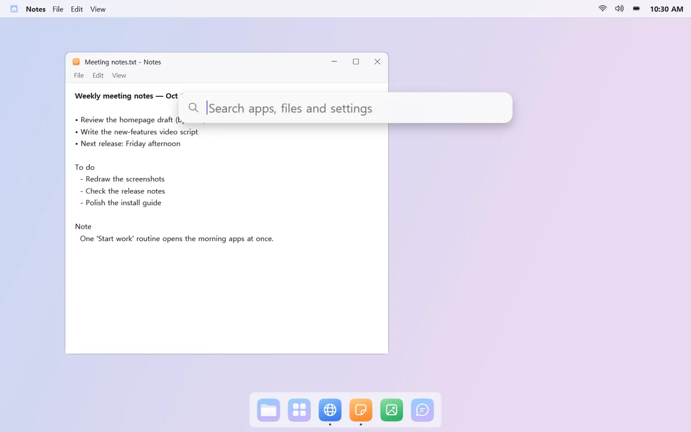
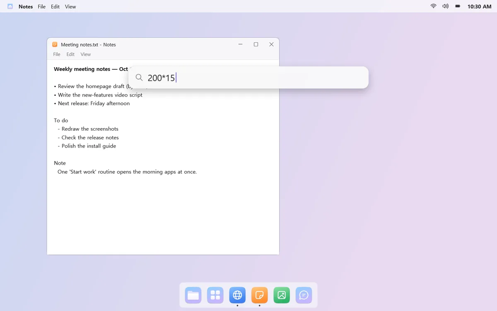
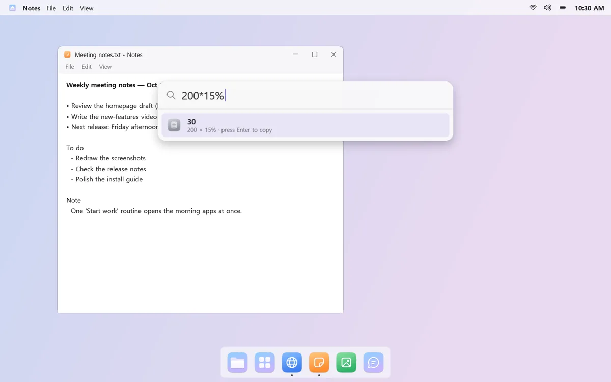
Good to know
- Apps that use their own pop-ups instead of Windows notifications, such as KakaoTalk, don't show banners. The red dot on their Dock icon still appears.
- After you change the notification sound for the first time, sign out and back in for it to take effect.
- Naver Calendar can't be connected because it doesn't offer an iCal subscription address.
- External monitor brightness works only on monitors that support it (DDC/CI).